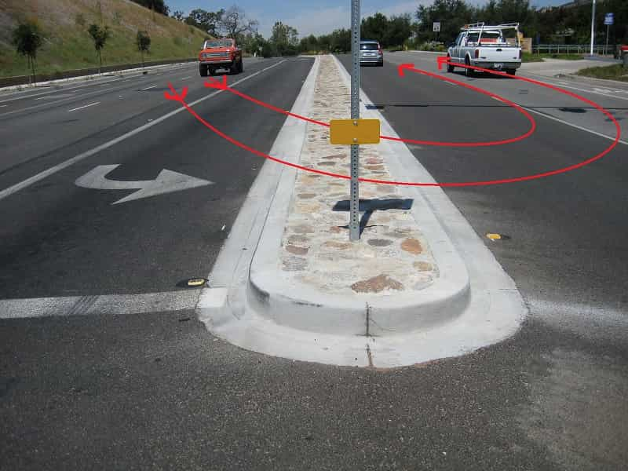

< < < Back
What It’s Like To Date A Strong And Independent Woman – Return Of Kings
I consider myself a pretty lucky man. I’ve been blessed with the good fortune of having a great father that taught me a lot about life. I also have a great mother who has stood by his side for over three decades. I had the privilege growing up in a household where respect was of paramount importance and traditional gender roles were on active display, giving me a red pill mindset from a young age.
Unfortunately, one belief that made its way into my head and stayed there for many years is that an independent, well educated, and high earning woman is a good catch. It’s difficult to make that confession, but it actually makes sense on the surface—the joint incomes would be great and, in the event of divorce, the chances of making a relatively easy financial escape would be greatly increased.
Well, a couple of years ago I met a woman that had great potential. We were in an unofficial relationship for a little over six months—the longest I’ve seen a particular woman in over six years of being single. We’ll call her Princess for this story. Princess was pretty crazy about me and, after about three and a half months of casual dating, she started hitting me up pretty hard for commitment.
She was a reasonably attractive and intelligent doctor that had recently completed her residency. I was a tall and charismatic pilot. On paper, we seemed like a great match: the highly intelligent independent woman and the high flying ambitious man—both the same age too. A small-scale “power couple” in the making. If I had committed and eventually married this woman, by the time we were in our late thirties, it wouldn’t have been unreasonable to expect a joint income somewhere between $300,000-$375,000 per year.
A large home furnished with whatever we wanted was pretty much guaranteed. Most high-end cars, boats, and other toys would have been within our price range. There would have been five star vacations anywhere in the world, and our children would have received top notch private schooling. We could have easily raised a couple of kids and both retired multi-millionaires in our 50s.

All of this sounds really good, ideal even, but there was a problem. You see, if I eventually married this woman, I would’ve been stuck listening to her fucking mouth. Listening to a “strong and independent” woman’s blather is like a Navy SEAL drawing his Sig Sauer 9mm and delivering a double tap to your cock. Nothing kills a boner quicker than the prattling hole that comes standard on every “strong and independent” woman’s face.
Everywhere I went with with this broad—and I mean everywhere—she made it a point to let everyone know that she was a doctor. Do you know how embarrassing that shit was? She couldn’t just be Princess, she had to be motherfuckin’ Dr. Princess. Apparently, she ascended above the ranks of a normal person and was anointed by the Lord Jesus Christ himself for earning that MD. The ego on this woman was absolutely astonishing, and this is coming from a pilot for God’s sake.
Every waiter, cashier, and grocery bagger in the city knows this woman is a doctor. How do they know? Because she fucking told them, that’s how. Not to mention, she was terribly rude to these people most of the time. She felt it as if it was beneath her to associate with the peasantry, or as I like to call them, average people. This is something I absolutely cannot stand. Here are some examples.
Example 1
Cashier: Will that be all ma’am?
Her: Yes, just the Altoids, I like to chew on mints when I’m with my patients—I’m a doctor.
Cashier: I see, well, have a nice day then. (Clerk + Fucks Given = Zero)
Example 2
Waitress: Would you like me to get you a to-go box for your leftovers, ma’am?
Her: Uhhhhh, well, yes of course, I’ll have it for lunch tomorrow at the clinic… if I have time. It’s so difficult to get a lunch break when you’re a busy new doctor.
Waitress: Okay, I’ll bring you a box.
Example 3
Grocery Bagger: Good afternoon ma’am, how are you? Are plastic bags okay?
Her: My feet are killing me, I had such a high patient load at work. They are just working us doctors to death lately.
Grocery Bagger: Okay, plastic it is then.
She couldn’t seem to grasp the fact that no one gave a single shred of a half-mast fuck about her medical degree. She would tell this to people, I’m assuming, so they would say, “Wow, a doctor! Oh my God, you’re so awesome, can you please turn around so I can kiss your ass? I, of course, would taunt her about this mercilessly. One time that sticks out quite well…
Me: Hey, I just spotted some human beings off in the distance, if you run you might be able to catch them before they make it to their car.
Her: Huh, why would I do that?
Me: Well, I’m pretty sure they don’t know that you’re a doctor, and I wouldn’t want them to miss out on that very exciting and life altering news. Don’t let them get away. Better hurry up or you’ll blow your chance.
Her: You’re such a prick.

But Wait, There’s More
As annoying as all of this was, it’s not the worst part. The worst is that she was completely incapable of anything that involved common sense. It wouldn’t have surprised me if she had a Post-it note attached to her toilet seat that said, “Reminder: wipe ass after taking shit!” She was hopeless with just about anything that didn’t involve the one thing she knew—medicine.
Now, even that wouldn’t have been such a bad thing if she had the ability to acknowledge that she was pretty much completely helpless. However, the fact that she went to medical school somehow superseded everyone else’s expertise or knowledge about anything. She knew it all, and to say it was somewhat difficult to get her to shut up and listen would be like saying it’s somewhat difficult to hit a fart with a bow and arrow. During the course of our relationship, I managed to mock her and talk enough shit that she relented on some of these bad habits, but it wasn’t nearly enough.
The Endgame
We had made plans to go out with my buddy and his wife on their boat. I went to pick up Dr. Princess and we decided to take her car. I was driving her car for the first time in well over two months since we always took my car everywhere. I’m driving along and notice that her car—a $45,000 BMW—is pulling pretty hard to the left. I decide to have a chat with her about this…
Me: You know this car needs a front end alignment, right? It’s pulling to the left quite a bit.
Her: Yeah, I know [she didn’t fucking know], I did a U-turn over a median and I think I screwed it up.
Me: What? Why did you do that? How long ago did that happen?
Her: About a month or so, I was on my way to the clinic and was running late.
Me: You’ve been driving it like this for a month?
Her: Yeah, so? It’s not that big of a deal.
Telling her why it was, in fact, a pretty big fucking deal would have been about as useful as telling Helen Keller how to use a telescope—I just dropped the subject. I did decide that I would stop by a gas station and try to borrow a tire pressure gauge, just so we could see if the pulling was the result of low air pressure on the left front tire. If so, we could just service it up and be on our way—a free and easy fix.
While we were waiting at a traffic light, I noticed a dealer sticker on the windshield that said when her next oil change was due. I checked the odometer and saw it was due over 1,700 miles ago. We have another conversation…
Me: When was the last time you had the oil changed?
Her: It’s been a while, I’m not sure, why?
Me: See this sticker? It was due 1,700 miles ago, you’re going to turn a $45,000 BMW into a rolling hunk of shit if you don’t start taking better care of it—the warranty doesn’t cover negligence. You really need to take it to the shop tomorrow and get all of this straightened out.
Her: It’s not your fucking car! Don’t concern yourself with things that are none of your damn business! If it breaks, I’ll get it fixed! I don’t need you telling me what to do!
She was completely right, it wasn’t my car. So, I decided to give her BMW the kind of treatment it was accustomed to. Once the traffic light turned green, I did a U-turn over the fucking median and headed straight back to her condo. To maximize potential embarrassment, I dumped her ass by calling her a loser loud enough to ensure the neighbors heard it. I didn’t live there and wouldn’t be coming back, so it’s not like I gave a shit.
Plus, nothing drops the jaw of a snobby doctor broad like being called a loser while simultaneously getting dumped. I then got into my perfectly functioning automobile and drove to my buddy’s house. It was beautiful and incredibly efficient. I was proud.

Artist reconstruction of my U-turn.
Throughout the course of the day—which was spent having a blast on my buddy’s boat and lining up a different chick to spend my evening with—I received about 40 text messages and a dozen calls from Dr. Princess. They went unanswered. According to my neighbors, she came by my house looking for me while I was off working about a week later. Luckily she didn’t vandalize anything. She was so strong and independent that she continued texting me for nearly three weeks after I ended things, begging for another chance…
In Closing
So, where have all the good men gone? Perhaps a better question would be: where have all the women that know how to shut the fuck up gone? It’s safe to say that more and more decent men will be riding off into the sunset with their middle fingers held high in the air. A very large portion of these men aren’t exactly basement dwelling retards, either. There are millions upon millions of cumulative dollars being earned by tons of men, and these men will not be sharing that money with a bunch of yippy yappy babbling female assholes. This trend will not be slowing down as time passes by, that’s a guarantee.
The fact of the matter is real men are sick of this shit. They’re sick of the arrogance, the snark, and the ridiculous superiority complexes the women in this country constantly exhibit. This goes for all men: blue collar, white collar, and everything in between. It’s the flat-out repulsive behavior like I described in the above story that has us to the end of our wits—it’s unbearable. There were only three reasons why the relationship with Dr. Princess lasted as long as it did: she used to buy me stuff, we didn’t see each other very often due to our schedules, and I was seeing other women. That’s it.
One would like to think that earning an education would open a person’s mind and give them some perspective on life. This doesn’t happen with the majority of women, though. In fact, possessing a degree has become a reason to discard all humility and common courtesy. Where has the highly desirable and respectable female trait of modesty absconded to? Perhaps, most importantly, where has the respect for honest people trying to make an honest living gone?
Do you know what I call the guy that picks up my garbage? What about the person that works at the convenience store, or the construction worker that’s fixing pot holes on my street? I call them “sir” or “ma’am”, and why do I call them that? Because I’m grateful that they exist. I’m glad there are men willing to bust their asses for 8-12 hours a day in 95-degree heat or 30-degree cold to build, fix, and create things for the betterment of my existence. Far too many women in this country can’t see it because they’re too busy looking down their stuck-the-fuck-up noses at everyone around them. This just in ladies—you ain’t shit.
The women that say they are “strong and independent” are the most insolent, intolerable, and incapable vagina-possessing human beings you will ever meet. People that are strong and independent don’t go around trying to convince everyone in their vicinity of how strong and independent they are—it’s on display for all to see. Their actions and abilities will showcase their true potential. A running mouth isn’t compulsory to getting the point across.
The “strong and independent” woman is nothing more than a talker—a blabbering mouth that moves at a thousand miles an hour and only stops when there’s a dick nearby that needs to be sucked. It would be nice to see some talents other than fellatio come along to keep that mouth company, but I won’t be holding my breath. And I know, for certain, I’m not alone.
Read More: The Strong & Independent Woman Translator


{kind=link}
{kind=link}